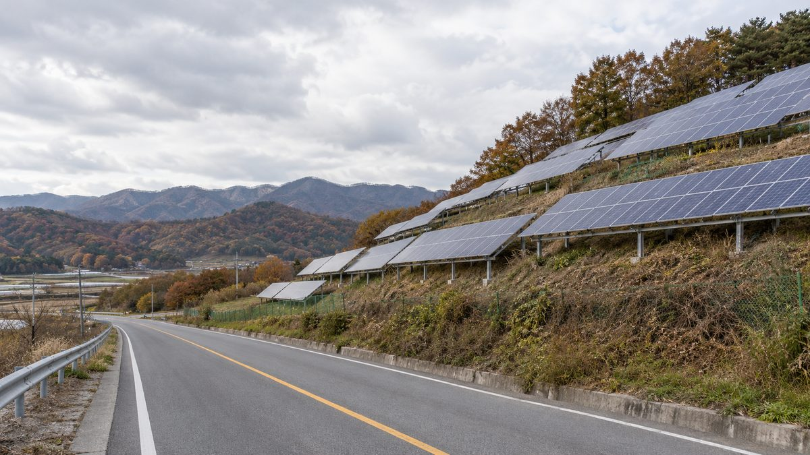

반도체 도시 용인, 재생에너지 발전 2022년 소비량의 0.8%…1호 시민참여 햇빛발전소는 18억 원 중 9억1,000만 원 협동조합 출자

경기 31개 시·군 중 온실가스 배출 4위·신재생 발전량 27위, 1차 에너지계획 이행률 27.6%…공공시설 4곳 1,000kW급 주민참여형 태양광 설치 중, 조합원 200여 명 시민 햇빛협동조합도 창립
반도체 클러스터 두 곳이 들어서는 경기 용인시의 신재생에너지 발전량이 2022년 기준 시 전력 소비량의 0.8%에 그친 가운데, 시민협동조합이 사업비의 절반 넘게 낸 공공협력 햇빛발전소와 주민참여형 공공시설 태양광이 하나둘 생기고 있다. 인구 110만 명의 용인시는 경기도 31개 시·군 가운데 온실가스 배출량이 4위인 반면 신재생에너지 발전량은 27위이며, 전력 소비량은 2017년 944만7,337MWh에서 2022년 1,106만9,231MWh로 5년 사이 17.2% 늘었다. 김수진 단국대 교수는 반도체 공장이 계획대로 가동되면 2035년 용인 전력 소비가 지금의 5~6배로 커진다고 분석했고, 1차 에너지자립·지역에너지 계획(2018~2022)은 세부 사업 29개 가운데 8개만 추진돼 이행률이 27.6%에 머물렀으며 2차 계획(2023~2027)을 모두 이행해도 2027년 신재생 비중은 약 4.5%일 것으로 추산했다. 2025년 9월 처인구 백암면 근삼리 지방도 318호 사면에 준공된 '용인 1호 시민참여·공공협력 햇빛발전소'는 사업비 18억 원 가운데 9억1,000만 원을 시민참여협동조합이, 4억 원을 용인시가, 4억9,000만 원을 경기도가 냈고, 경기 RE100 선도사업에 3년 연속 선정된 시는 양지읍 근린공원 등 공공시설 4곳의 체육시설·주차장 위에 총사업비 22억9,200만 원 중 11억4,600만 원을 민간이 부담하는 1,000kW급 주민참여형 태양광을 설치하고 있다. 2025년 11월에는 조합원 200여 명의 용인모두의햇빛협동조합이 창립해 올해 200kW 규모 1·2호기 설치를 목표로 잡았다. 전문가들은 산업단지 전력과 시민 생활 전력을 나눠 자립 목표를 세우고 용인 에너지공사를 설립하자고 제안했으며, 이창수 안산시민햇빛발전협동조합 이사장은 외곽 자연마을에는 햇빛소득마을을 들이고 도심 공공부지는 "시민협동조합에 임대해 주는 게 필요하다"고 말했다.
시민에너지 관점
용인 1호 발전소에서 시민협동조합이 18억 원 가운데 9억1,000만 원을 낸 것은, 공공부지 태양광의 주인 자리를 시민이 절반 넘게 채울 수 있다는 것을 숫자로 보여 준다. 반도체 산단의 거대한 수요 앞에서 시민 발전소는 티도 나지 않는다는 반론이 나올 수 있지만, 산단과 생활 전력을 나눠 보면 이야기가 달라지고, 용인의 태양광 기술적 잠재량이 2023년 소비량의 약 1.7배로 분석된 만큼 도로 사면·공원·주차장 같은 공공 공간은 시민 몫을 키울 충분한 자원이다. 오스트리아 빈의 시영 전력회사 빈에너지는 2012년부터 시민이 태양광 패널 몫을 사서 수익을 나눠 받는 '시민 태양광발전소'를 세워, 공공이 부지와 계통을 맡고 시민이 출자자로 들어가는 길을 열었다. 용인시가 에너지공사를 검토한다면 공공 유휴부지를 모아 시민협동조합에 임대하고 인허가와 계통 접속을 한 창구에서 처리해 주는 일부터 시작해야 한다.
출처: 용인시민신문 2026-10-27 함승태 원문 보기
半導体都市・龍仁、再エネ発電は2022年消費量の0.8%…市民参加の太陽光1号発電所は18億ウォンのうち9億1,000万ウォンを協同組合が出資
京畿道31市・郡で温室効果ガス排出4位・新再生エネ発電量27位、第1次エネルギー計画の履行率27.6%…公共施設4カ所で1,000kW級の住民参加型太陽光を設置中、組合員200人余りの市民太陽光協同組合も発足
半導体クラスター2カ所が建設される京畿道龍仁市で、新再生エネルギーの発電量が2022年時点で市の電力消費量の0.8%にとどまる中、市民協同組合が事業費の半分以上を出した公共協力型の太陽光発電所や住民参加型の公共施設太陽光が少しずつ生まれている。人口110万人の龍仁市は、京畿道31市・郡のうち温室効果ガス排出量が4位である一方、新再生エネルギー発電量は27位で、電力消費量は2017年の944万7,337MWhから2022年には1,106万9,231MWhへと5年間で17.2%増えた。キム・スジン檀国大学教授は、半導体工場が計画通り稼働すれば2035年の龍仁の電力消費は現在の5～6倍に膨らむと分析し、第1次エネルギー自立・地域エネルギー計画（2018～2022）は細部事業29件のうち8件しか進まず履行率は27.6%にとどまり、第2次計画（2023～2027）をすべて履行しても2027年の新再生エネルギー比率は約4.5%と推計した。2025年9月に処仁区白岩面の地方道318号の法面に完成した「龍仁1号市民参加・公共協力太陽光発電所」は、事業費18億ウォンのうち9億1,000万ウォンを市民参加協同組合が、4億ウォンを龍仁市が、4億9,000万ウォンを京畿道が負担し、「京畿RE100先導事業」に3年連続で選ばれた市は、陽智邑の近隣公園など公共施設4カ所の運動施設・駐車場の上に、総事業費22億9,200万ウォンのうち11億4,600万ウォンを民間が負担する1,000kW級の住民参加型太陽光を設置している。2025年11月には組合員200人余りの「龍仁みんなの日差し協同組合」が発足し、今年200kW規模の1・2号機の設置を目標に掲げた。専門家らは産業団地の電力と市民の生活電力を分けて自立目標を立て、龍仁エネルギー公社を設立するよう提案し、イ・チャンス安山市民太陽光発電協同組合理事長は、郊外の自然集落には日差し所得村を導入し、都心の公共用地は「市民協同組合に賃貸することが必要だ」と述べた。
市民エネルギーの視点
龍仁1号発電所で市民協同組合が18億ウォンのうち9億1,000万ウォンを出したことは、公共用地の太陽光の持ち主の座を市民が半分以上占めうることを数字で示している。半導体団地の巨大な需要の前では市民発電所など目立たないとの反論もあろうが、産業団地と生活電力を分けて見れば話は変わり、龍仁の太陽光の技術的ポテンシャルが2023年の消費量の約1.7倍と分析されている以上、道路法面・公園・駐車場といった公共空間は市民の取り分を広げる十分な資源だ。オーストリア・ウィーンの市営電力会社ウィーン・エネルギーは2012年から、市民が太陽光パネルの持ち分を買って収益の分配を受ける「市民太陽光発電所」を建て、公共が用地と系統を担い市民が出資者として加わる道を開いた。龍仁市がエネルギー公社を検討するなら、公共の遊休地を集めて市民協同組合に貸し出し、許認可と系統接続を一つの窓口で処理するところから始めるべきだ。
出典: 龍仁市民新聞 2026-10-27 ハム・スンテ 原文を読む
半导体城市龙仁可再生能源发电仅占2022年用电量的0.8%…首座市民参与光伏电站18亿韩元中9.1亿由合作社出资
在京畿道31个市郡中温室气体排放居第4、新再生能源发电量居第27，第1次能源计划执行率27.6%…4处公共设施正在建设1,000kW级居民参与型光伏，约200名社员的市民光伏合作社也已成立
在将建起两座半导体产业集群的京畿道龙仁市，新再生能源发电量按2022年计仅占全市用电量的0.8%，与此同时，由市民合作社出资过半的公共合作型光伏电站和居民参与型公共设施光伏正在陆续出现。人口110万的龙仁市在京畿道31个市郡中温室气体排放量居第4位，新再生能源发电量却排第27位；用电量从2017年的944万7,337MWh增至2022年的1,106万9,231MWh，5年间增长17.2%。檀国大学教授Kim Su-jin分析称，若半导体工厂按计划投产，2035年龙仁用电量将膨胀至目前的5至6倍；其分析还显示，第1次能源自立与地区能源计划（2018～2022）的29项细分项目中只有8项得到推进，执行率仅27.6%，并推算即使第2次计划（2023～2027）全部落实，2027年新再生能源占比也只有约4.5%。2025年9月在处仁区白岩面318号地方道路边坡上建成的"龙仁1号市民参与·公共合作光伏电站"，总投资18亿韩元中，市民参与合作社出资9.1亿韩元，龙仁市4亿韩元，京畿道4.9亿韩元；连续3年入选"京畿RE100先导项目"的龙仁市，正在阳智邑社区公园等4处公共设施的体育设施和停车场上方建设1,000kW级居民参与型光伏，总投资22.92亿韩元中有11.46亿韩元由民间承担。2025年11月，约200名社员的"龙仁大家的阳光合作社"成立，目标是今年建成200kW规模的1号和2号机组。专家们建议把产业园区用电与市民生活用电分开设定自立目标，并设立龙仁能源公社；安山市民阳光发电合作社理事长Lee Chang-su表示，郊外自然村应引入阳光收入村，市区的公共用地则"有必要租给市民合作社"。
市民能源视角
在龙仁1号电站中，市民合作社在18亿韩元里出资9.1亿韩元，用数字证明了公共用地光伏的主人位置可以有一半以上由市民占据。有人会反驳说，在半导体园区的巨大需求面前，市民电站微不足道；但把园区用电与生活用电分开来看，情况就不同了，何况龙仁光伏技术潜力被分析为2023年用电量的约1.7倍，道路边坡、公园、停车场等公共空间足以扩大市民的份额。奥地利维也纳市营电力公司维也纳能源（Wien Energie）自2012年起建设由市民购买光伏板份额并分享收益的"市民光伏电站"，开辟了由公共方负责场地和并网、市民作为出资人加入的道路。龙仁市若要研究设立能源公社，应先从集中整合公共闲置用地租给市民合作社、并在一个窗口统一办理许可和并网手续做起。
来源: 龙仁市民新闻 2026-10-27 Ham Seung-tae 查看原文
Chip city Yongin generated renewables equal to just 0.8% of its 2022 power use; cooperative put up 910 million of 1.8 billion won for its first citizen-backed solar plant
Yongin ranks 4th of Gyeonggi's 31 cities and counties for greenhouse gas emissions but 27th for renewable output, and carried out 27.6% of its first energy plan; 1,000 kW of resident-funded solar is going up at four public sites, and a citizen solar cooperative with some 200 members has launched
In Yongin, Gyeonggi Province, where two semiconductor clusters are being built, renewable generation equalled only 0.8% of the city's electricity consumption as of 2022, yet solar plants in which citizen cooperatives put up more than half the money, along with resident-funded solar on public facilities, are slowly starting to appear. The city of 1.1 million ranks fourth among Gyeonggi's 31 cities and counties for greenhouse gas emissions but 27th for renewable generation, and its power consumption rose 17.2% in five years, from 9,447,337 MWh in 2017 to 11,069,231 MWh in 2022. Kim Su-jin, a professor at Dankook University, estimates that if the chip plants run as planned, Yongin's consumption in 2035 will be five to six times today's level; Kim's analysis also found that only 8 of 29 projects in the city's first energy self-reliance and local energy plan (2018-2022) went ahead, an implementation rate of 27.6%, and projects that even full delivery of the second plan (2023-2027) would leave renewables at about 4.5% in 2027. The "Yongin No. 1 citizen-participation public-partnership solar plant," completed in September 2025 on the slope of provincial road 318 in Baegam-myeon, Cheoin-gu, cost 1.8 billion won, of which a citizen cooperative paid 910 million, the city 400 million and Gyeonggi Province 490 million; the city, chosen for Gyeonggi's RE100 leading project three years running, is also installing about 1,000 kW of resident-participation solar over sports facilities and car parks at four public sites including a neighbourhood park in Yangji-eup, with private investors covering 1.146 billion won of the 2.292 billion won total. In November 2025 the Yongin Everyone's Sunlight Cooperative was founded with some 200 members and aims to install its first two plants, totalling 200 kW, this year. Experts have proposed setting separate self-sufficiency targets for industrial-park power and residents' everyday power and creating a Yongin energy corporation, and Lee Chang-su, chair of the Ansan Citizens' Solar Cooperative, said villages on the city's outskirts should adopt sunlight income villages while urban public land "needs to be leased to citizen cooperatives."
Citizen Energy View
That a citizen cooperative supplied 910 million of the 1.8 billion won for Yongin's first plant shows in hard numbers that citizens can hold more than half the ownership of solar on public land. Some will argue that citizen plants are invisible next to the vast demand of the chip clusters, but the picture changes once industrial and household power are counted separately, and with Yongin's technical solar potential estimated at about 1.7 times its 2023 consumption, road slopes, parks and car parks are ample room to grow the citizens' share. Since 2012, Vienna's municipal utility Wien Energie has built "citizen solar power plants" in which residents buy a share of the panels and receive part of the returns, opening a path in which the public side provides the sites and grid connection and citizens come in as investors. If Yongin is weighing an energy corporation, it should start by pooling idle public land to lease to citizen cooperatives and handling permits and grid connection through a single window.
Source: Yongin Simin Sinmun 2026-10-27 Ham Seung-tae Read the original